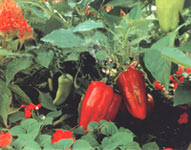
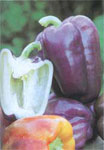
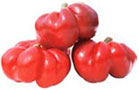
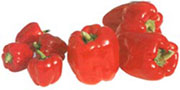
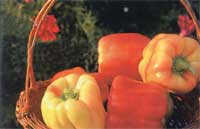
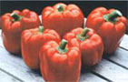
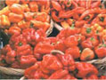

Here's how to enjoy the rich, sweet flavorsof ripe red peppers
Raising ripe, red sweet peppers takes patience, period. That's why they cost up to five times as much as green peppers and why some gardeners think they can't grow them. Even when they're grown from transplants, thick-fleshed and flavorful red peppers such as 'Pimento' and 'Red Marconi' take up to 100 days to mature. But some varieties turn red much sooner - in as little as 65 days. If you use these fast-maturing varieties and a few tricks of the trade, you can easily produce sweet, meaty red peppers in almost any climate.
Most red peppers start out green. Some begin life yellow, purple or white. After reaching their maximum size, these peppers will develop red pigments in 10 to 28 days, if daytime temperatures are between 65 degrees and 75 degrees. In southern regions where temperatures exceed that range, peppers turn yellowish and may acquire an off-color pallor that is not attractive, a big consideration for market growers. Below the optimum temperature range, color development slows dramatically; below 55 degrees, it stops completely. If soil temperatures drop below 68 degrees, pigment production declines and eventually ceases.
Sweet peppers are considered warm-season crops (they are more sensitive to cold than tomatoes), but they actually thrive in a temperature band of 60 degrees to 85 degrees. Within this range, some varieties develop red pigments faster than others do - in as little as 14 days in the case of 'King Arthur,' a 5-inch-long, disease-resistant variety that's popular with Wisconsin growers.
If you live in a cold climate or if your growing season is short due to the rapid onset of summer heat, choose early ripening varieties like 'King Arthur.' Oregon State University researchers have found that 'Lady Bell,' 'La Bamba,' 'Merlin,' 'Ace,' 'Bell Boy' and 'Red Knight' will color rapidly (in about two weeks) in almost every climate. 'Ace' is one of the most reliable varieties, setting fruit even when it's too hot or too cold for other varieties. "It's a remarkable variety," says pepper breeder Rob Johnston, owner of Johnny's Selected Seeds. "We discovered it in the 1970s and were blown away by its earliness and productivity. In the 25 years since, there have been contenders, but nothing beats 'Ace.'" It is the first pepper to turn red in any garden, about 65 days after transplanting. 'Jingle Bells,' a miniature bell pepper and a favorite at farmer's markets, produces an abundance of tiny, 1 1/2-inch-round fruits in 65 days too.
Another early red pepper that Johnston likes is 'Round of Hungary.' "It's not large," he admits, "but it is distinctive-looking, with smooth ribs and a bright red like there's a light inside." Fully red about 75 days after transplanting, 'Round of Hungary' has great market potential, Johnston says. "Something this good should always bring more money than ordinary bell peppers." He also loves 'Lipstick,' a pimento-type pepper that is fully red at 73 days. "Both 'Round of Hungary' and 'Lipstick' are very sweet and tops in taste," he says.
Another big fan of 'Lipstick' is Tom Denison, a Corvallis, Oregon, market grower who devotes more than an acre of his fields solely to peppers. "'Lipstick' is an absolutely delicious pepper that is thick-walled, very early and open pollinated," he says. "I can get untreated seed, too, from Johnny's, which is important, because I am an organic grower." Denison finds that his customers - from farmer's markets to the local food co-op - prefer thick-walled peppers. He doesn't grow Ace,' which has relatively thin walls, for that reason. "In 1978, when we started bringing red peppers to farmer's markets, we gave away samples to get people to buy," says benison. "They had never seen them, and we had to convince them that these red peppers were not hot." Since then, although regular red peppers are ubiquitous, benison's special, sweeter and organically grown varieties still are preferred by his customers.
Once you know the right varieties to grow, the key to getting lots of sweet red peppers is to 1) give them an early start indoors; 2) warm up the ground before you plant them outside; and 3) never give them any reason to stop growing. Start pepper seeds indoors at least eight to 10 weeks before nights remain above 50 degrees. If your indoor growing space is on the cool side (in a basement or other unheated room), start seeds two or three weeks sooner. "The idea is to have a transplant with some buds on it at planting time, but no open flowers," says Johnston. Harden off transplants for at least a week by leaving them outside for increasing amounts of time each day. "And, if you water them with a high-phosphorous fertilizer solution (compost or alfalfa-meal tea) at planting," he says, "they won't miss a beat and will set peppers rapidly."
When nighttime air temperatures stay above 50 degrees, peppers can he transplanted. At soil temperatures above 65 degrees, pepper growth accelerates. Plants may become stunted and never recover if either the soil or air temperature is much below 55 degrees. To combat cool ground, cover your beds with plastic mulch as early in the spring as possible. (Clear plastic warms the soil more quickly, but black plastic controls weeds better.) Once the soil has warmed, remove the plastic or cover it with grass clippings or other mulch to prevent the plastic-covered soil from becoming too warm.
Another trick, recommended by MOTHER'S Almanac contributor and retired Texas extension agent Bill Adams, is to place wire cages around each pepper transplant, wrapping the cages with clear plastic. These mini-greenhouses trap heat and act as a physical barrier to fungal diseases. After the weather heats up, remove the plastic around cages or the plants will get too hot.
If your summers get really sultry, your peppers will appreciate a heavy mulch after the spring season. Several inches of straw or dried grass clippings will keep the soil cooler and reduce moisture evaporation. Continually moist ground is a necessity for peppers, as they suffer from blossom end rot, a physiological disease caused by a calcium deficiency. Most soils contain ample calcium, but the mineral relies on water to transport it to the plant's root system. When the soil lacks moisture, the calcium can't reach the plants and a tell- tale black leathery spot forms on the blossom end of developing fruit.
Big, sweet peppers require a continual source of nutrition. The easiest way to fertilize them is to incorporate gradual-release fertilizer in the ground at planting. Fish-meal pellets, alfalfa pellets or cottonseed meal are all good organic choices. You also can foliar-feed plants every week or two with a fish/seaweed soluble fertilizer, spraying the tops and bottoms of leaves, or water the ground with the same mixture.
Peppers need a good supply of magnesium, which may be deficient in some soils. If a soil test or your extension agent recommends magnesium, scratch a tablespoon of Epsom salts (magnesium sulfate) around the base of each pepper plant when they start flowering, or mix a tablespoon of salts per quart of warm water and foliar-feed them.
Harris Seeds
(800) 514-4441
www.harrisseeds.com
'Blushing Beauty,' 'Flamingo,' Jingle Bells,' 'La Bamba,' 'Lady Bell'
Stokes Seeds
(800) 396-9238
www.stokesseeds.com
'Bell Boy,' 'King Arthur,' 'Merlin'
Johnny's Selected Seeds
(207)437-4301
www.johnnyseeds.com
'Ace,' Jingle Bells,' 'Lipstick,' 'Red Knight,' 'Round of Hungary,' 'Islander'
Tomato Growers Supply
(888) 478-7333
www.tomatogrowers.com
'Ariane,' 'Bell Boy,' 'Blushing Beauty,' 'Jingle Bells,' 'Gypsy,' 'King Arthur,' 'Purple Beauty,' 'Tequila'
|
 This unusual pepper is called 'Round of Hungary.' |
 This is the early ripening favorite 'Ace,' shown with miniature sweet pepper. |
 These flawless beauties are the sweet pepper variety 'Red Knight.' |
|
 This spectacular pepper harvest was grown in Eugene, Oregon. |
 |
 |
|
 |
|
|